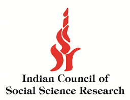
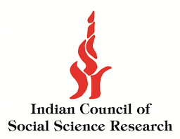
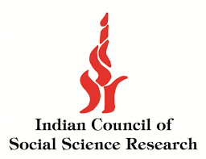
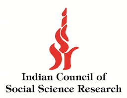

Date: 20 September, 2025 | Mode: Hybrid | Time: 09.00 AM
Venue: SRC, SASTRA
SASTRA Deemed University stands as a premier institution of higher learning in India, with its sprawling campus encompassing a built-up area of over 1.6 million square feet, designed to provide a world-class academic and research environment. The university boasts a dynamic and diverse community of approximately 15,000 students hailing from across the country and beyond, guided by a dedicated team of over 700 experienced faculty members. The presence of state-of-the-art laboratories, advanced research centres, modern classrooms, and fully equipped infrastructure has made SASTRA a recognized landmark on the educational map of India. Since its inception, SASTRA has earned a national reputation for academic excellence, consistently achieving high standards across all aspects of education, including teaching, research, and student development. The institution places a strong emphasis on a holistic learning experience by promoting not only academic performance but also co-curricular and extra-curricular activities such as cultural programs, technical festivals, sports, and entrepreneurship initiatives. SASTRA also prioritizes community engagement and social responsibility, nurturing students to become both competent professionals and responsible citizens who contribute meaningfully to society. The university offers a comprehensive range of Undergraduate, Postgraduate, and Doctoral programmes across multiple disciplines including Engaineering, Arts, Sciences, Law, and Management, ensuring that students have access to diverse academic pathways and career opportunities. Its engineering programs, in particular, are widely recognized for their academic rigor and industry relevance. To complement its academic offerings, SASTRA integrates research-oriented learning, industry collaborations, and value-added certification programs to bridge the gap between theory and practical application. SASTRA's commitment to academic excellence is reflected in its accolades and rankings, particularly its stellar performance in the National Assessment and Accreditation Council (NAAC) evaluations. The university has been reaccredited with an impressive score of 3.764/4.0 (Cycle IV), a testament to the quality of its academic programs, governance, faculty expertise, and infrastructure. This recognition places SASTRA among the top-tier institutions in India, affirming its status as a hub of innovation, quality education, and research excellence.
SASTRA established Srinivasa Ramanujan Centre in 2002 as a fitting tribute to the great mathematician, Srinivasa Ramanujan who spent most of his formative years in the temple town of Kumbakonam. The centre is housed in a six-story structure. This centre also houses a museum called “House of Ramanujan”, on the life and works of Srinivasa Ramanujan. SASTRA purchased and renovated the house where Srinivasa Ramanujan lived and spent his childhood days. The house and the museum have been dedicated to the nation by His Excellency Dr. A.P.J. Abdul Kalam, the then President of India.
The Department of Commerce and Management Studies was established in the year 2002 with a view to enable students to pursue higher education and develop entrepreneurial skills. The Department offers the following Graduate and Postgraduate programmes: “B.Com., ” “B.B.A., ” “M.Com., ” “Ph.D.” It nurtures the students with strong subject knowledge, imparting confidence and skills to meet the demanding needs of the current competitive business scenario and pursue higher studies. The Faculty members of the department bring with them rich experience and excellent academic record; their wide exposure aids the students to aspire to reaching new heights. The department also enlightens the candidates by adding on courses viz., CA-Foundation for CA Aspirants which the Institute of Chartered Accountants of India recognizes.
In the face of climate change, resource depletion, and increasing regulatory pressure, manufacturing SMEs are at a pivotal point of transformation. Building Circular Futures aims to explore how these enterprises can embed sustainability into their operations by integrating circular economy practices. The initiative focuses on capacity building, policy support, and innovative technologies—such as Industry 4.0 tools, IoT, and blockchain—to facilitate this shift. The program underscores the importance of collaborative ecosystems, involving vendors, customers, policymakers, and research institutions, to drive sustainable manufacturing. It also emphasizes education, training, and researchdriven frameworks to help SMEs overcome challenges like lack of awareness, high upfront costs, and limited access to green technologies. Ultimately, the vision of Building Circular Futures is to create a resilient, low-carbon manufacturing ecosystem that not only benefits businesses but also contributes positively to environmental and social well-being
Researchers, academicians, industry practitioners, and postgraduate students are invited to submit original and unpublished research papers or case studies relevant to the theme "Building Circular Futures: Transforming Manufacturing SMEs for Sustainability." The conference welcomes submissions in the following (but not limited to) thrust areas:.
Thrust Areas include:
Email: icssr.src.ce.2025@gmail.com
Contact Number:
Dr. R. Alamelu - 9965455662
Dr. M. Sudha - 9842993018
Mr. R. Purushothaman - 6382534495
Submission link: https://forms.gle/2NURGoBvLRJu3EFi8